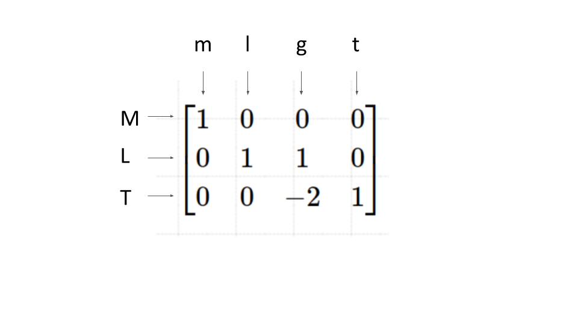

承认自己没有理解本科课程的内容是不可能有任何羞耻的效果的。
在工程和物理问题的研究中，使用无量纲数的相关式来表征现象的特性是非常常见的做法。在提出一些迂腐的回字问题之前，让我们先复习一下所谓量纲分析和相似原理的课程内容。
简单的说，白金汉π定理指出，若有一个物理上有意义的方程，其中有n个物理量，而这些物理量共有k个独立的量纲，则原方程可以写成由p = n − k个无量纲的参数组成的方程，而这些无量纲的参数是由原方程中的物理量所组成。
在传热学教科书中上述定理一般在对流传热的基本方程后导入，意在告诉学生对流传热现象可以用无量纲数的相关式进行简化，导入过程一般是这样的：
假设我们想要研究单相管内流动的对流传热系数\(h\)，在不知道其具体形式的时候，我们先根据经验判断，\(h\)应该依赖于下面这些物理量： \[h=f(u,d,\lambda,\eta,\rho,c_p)\] 其中的\(u\)为流体流速，\(d\)为表征管道大小的长度（通常取水力直径），\(\lambda\)为流体的导热系数，\(\eta\)为动力粘度（不是运动粘度），\(\rho\)为密度，\(c_p\)为比热。这里一共有7个物理量，其中包含的量纲共4个，分别为时间量纲\(T\)，长度量纲\(L\)，质量量纲\(M\)以及温度量纲\(\Theta\)，即对应白金汉定理中的n=7, k=4，故可以组成n-k=7-4=3个无量纲量。
这里选择\(u,d,\lambda,\eta\)为基本物理量，将基本量如下所示，逐一与其余各物理量组成无量纲量： \[\pi_1=h u^{a_1}d^{b_1}\lambda^{c_1}\eta^{d_1}\] \[\pi_2=\rho u^{a_1}d^{b_1}\lambda^{c_1}\eta^{d_1}\] \[\pi_3=c_p u^{a_1}d^{b_1}\lambda^{c_1}\eta^{d_1}\] 上述各物理量的量纲为： \[\textrm{dim } h= M\Theta^{-1}T^{-3}, \textrm{dim } d= L\] \[\textrm{dim } \lambda= ML\Theta^{-1}T^{-3}, \textrm{dim } \eta = ML^{-1}T^{-1}\] \[\textrm{dim } u = LT^{-1}, \textrm{dim } \rho= ML^{-3}\] \[\textrm{dim } c_p = L^2T^{-2}\Theta^{-1}\] 将这些量纲代入各个无量纲数的表达式中，以\(\pi_1\)为例，其量纲为： \[ \textrm{dim } \pi_1 = L^{a_1+b_1+c_1-d_1} M^{c_1+d_1+1} \Theta^{-1-c_1} T^{-a_1-d_1-3c_1-3}\] 由于\(\pi_1\)必须是无量纲的，所以上述式子中所有的指数必须为0,连立这些方程式： \[ a_1+b_1+c_1-d_1= 0\] \[ c_1+d_1+1= 0\] \[ -1-c_1 = 0\] \[ -a_1-d_1-3c_1-3 = 0\] 由此得到\(b_1=1, d_1=0,c_1=-1,a_1=0\)，故无量纲数\(\pi_1\)的形式就确定了： \[\pi_1 = hu^0d^1\lambda^{-1}\eta^0 = {hd \over \lambda} = Nu\] 同理，剩余的两个无量纲数也可以用类似的方法推得，分别为： \[\pi_2 = {\rho u d \over \eta} = Re\] \[\pi_3 = {\eta c_p \over \lambda} = Pr\] 至此，根据白金汉定理，管内传热的模型一定可以简化为如下的形式： \[Nu = f(Re, Pr)\] 也就是我们在教科书和研究论文中经常看到相关式形式。
上述的过程如果通读下来，显然是没有错误的，但是却包含了一些未经说明的含义和条件，这里通过质问的方式来一一梳理：
在教科书和白金汉最初发表pi定理的文章中都明确指出了量纲解析的意义，再次以上面的管内对流传热为例，如果不进行量纲分析，原来的传热系数形式如下： \[h=f(u,d,\lambda,\eta,\rho,c_p)\] 要确定\(h\)和其他物理量的具体关系，就必须变动每个物理量然后测量\(h\)的变化，这里共有6个不同的物理量，假设每个量取10个不同的值进行实验， 就需要\(10^6 = 1000000\)次的实验，这在实际研究过程中是非常费时费力的。而如果进行量纲分析后，我们只要对 \[Nu = f(Re, Pr)\] 中3个无量纲数的关系进行测量即可，实验的数量将迅速减少到\(10^2 = 100\)次。得到的结果将代表一组具有相似特征的物理现象，比如针对空气\((Pr=0.7)\) 测量了\(Re=100\)情况下的换热系数，那么在速度\(u\)和直径\(d\)的比例不变的条件下，换热系数就是不变的。
事实上对于同一个物理现象，可以产生的无量纲数是无穷的，也不必是上述的Nu, Re和Pr数这些常见的无量纲数，“猫腻”就在于上述过程中的“基本物理量”的选择。 如果不选择\(u,d,\lambda,\eta\)为基本物理量，会发生什么呢？让我们来实验一下：
现在选择\(\rho,u,c_p,\lambda\)为基本物理量，重新组织无量纲数的形式，于是有
\[ \pi_1' = h \rho^{a_1} u^{b_1} c_p^{c_1} \lambda^{d_1}\] \[ \pi_2' = \eta \rho^{a_2} u^{b_2} c_p^{c_2} \lambda^{d_2}\] \[ \pi_3' = d \rho^{a_3} u^{b_3} c_p^{c_3} \lambda^{d_3}\]省略中间和上述相同的计算过程，我们发现满足这个方程组的解为\(a_1 = 5, b_1 = 11, c_1=5, d_1=-6\)，于是无量纲数就变成了 \[\pi_1' = h \rho^5 u^{11} c_p^5 \lambda^{-6}\] 不信邪的同学可以手算验证一下这个数是不是无量纲。同理另外两个无量纲数也可以计算得出，于是相关式就变成了如下的形式： \[ \pi_1' = f( \pi_2', \pi_3')\]
因此我们用结果论证明了，对同一个物理方程，无量纲数的选择并不是唯一的。
白金汉定理在白金汉本人发表最初的论文时只有一个示意性的说明，并没有严格的数学证明。后来有数学家给出严格的证明， 需要用到李群等让我学渣头秃的概念，而且过程较为抽象，对理解其原理也未必有直观的帮助。所以这里只给出一个较为直观的说明。
首先我们注意到，不论是什么形式的物理方程，其左右两边的量纲都必须是一致的，比如： \[F=ma\] \[\dot{q} = \lambda {dT \over dx}\] \[ {\partial u \over \partial x} + {\partial v \over \partial y}= 0 \] \[ {\varepsilon} = - {{d \Phi_B} \over {dt}}\] 或者用一般的表达形式： \[ \textrm{dim } f(Q_1, Q_2, ... Q_n) = \textrm{dim } g(Q_1, Q_2, ... Q_n)\] 其中\(Q_1, Q_2, ... Q_n\)为描述这个物理方程所需要的n个物理量。换句话说，此方程一定可以变化为下面的无量纲形式： \[ { {\textrm{dim } f(Q_1, Q_2, ... Q_n)} \over {\textrm{dim } g(Q_1, Q_2, ... Q_n)} } = \textrm{dimensionless}\] 这个方程的左边是用n个物理量组成的一个未知表达式，而右边是一个无量纲的常数，因此这个方程左右两边一定都是无量纲的。由此我们可以说， 所有物理方程，都可以转换为用n个物理量组成的无量纲方程。
那么这个无量纲的方程会包含多少无量纲数呢？
这里我们首先要理解，一个方程能包含的所有的无量纲数，是由他所包含的物理量组成的一个线性空间。为了说明这个概念，我们考虑一个单摆系统。 假设我们想研究单摆的周期变化，根据经验这个系统的方程会包含以下物理量 \[ t = f(m,l,g)\] 这里\(t\)是单摆周期，\(m\)为小球质量，\(l\)为摆线长度，\(g\)是重力加速度。为了观察这些量的量纲，我们将其组织成如下的矩阵形式：
这里的每一个行代表一个量纲，而每一个列代表一个物理量。比如第一列为[1;0;0]，表示\(m\)这个物理量的量纲为\(M\)，同理，比如第三列\(g\)， 其量纲就是\(LT^{-2}\)。